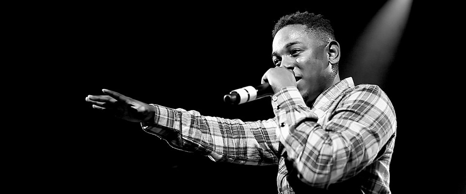

Early Life
Kendrick Lamar Duckworth (who dropped his last name to perform as Kendrick Lamar) was born in Compton, California, on June 17, 1987. His parents had moved to Compton from Chicago to escape the city's gang culture, although Lamar's father had been associated with the notorious Gangster Disciples gang. As the 1980s crack trade and West Coast gang presence increased, Lamar grew up around precarious street activity, but he seemed more influenced than harmed by it. He was a good student who enjoyed writing, first stories and poems, and then lyrics. Lamar's family was directly touched by the violence of the streets, yet he remained thoughtful and soft-spoken, ever the keen observer, even as a child. He adopted the moniker K-Dot and began performing his lyrics as a rapper. At age 16, in 2003, he circulated a mix tape, which drew a lot of interest in his native Southern California and beyond. The project was enough to get Lamar a record deal with Top Dawg Entertainment, a respected California independent label and feeder to major labels.

Kendrick quit drinking and smoking when he was around 16 or 17 and focused on his rap career, something he'd been interested in since watching Dr. Dre and Tupac Shakur film the music video for "California Love." He has since released a number of mixtapes and albums, but it was "good kid, m.A.A.d city" that placed him on the map and got him seven Grammy nominations in 2014. He was snubbed that night, losing all seven categories he was nominated in, but the following year, he did end up winning two for his single "i."
Kendrick meeting Dr.Dre
In 2010 Lamar dropped the K-Dot tag and began using his own name. He also put out a fourth mix tape, Overly Dedicated. That same year, Lamar released his first full-length independent album under Top Dawg Entertainment. Titled Section.80, it was released exclusively on iTunes. Lamar continued writing music and lyrics, and continued to tour and collaborate with more popular recording artists such as Young Jeezy, The Game, Talib Kweli, Busta Rhymes and Lil Wayne. Dr. Dre, one of hip-hop's most respected and influential producers, took the young artist under his wing, becoming his mentor in both music and business.
As the buzz on Lamar continued to build, Dr. Dre signed him to his independent record label, Aftermath Entertainment, alongside more established rap stars Eminem and 50 Cent (in a joint venture with Top Dawg). Aftermath was distributed by major label Interscope (Universal Music), which would have the marketing, sales and distribution muscle to take Lamar's career to the next level. Now the quiet, observant kid who made good grades in school was poised to become rap's newest superstar.
